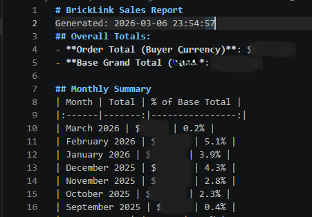
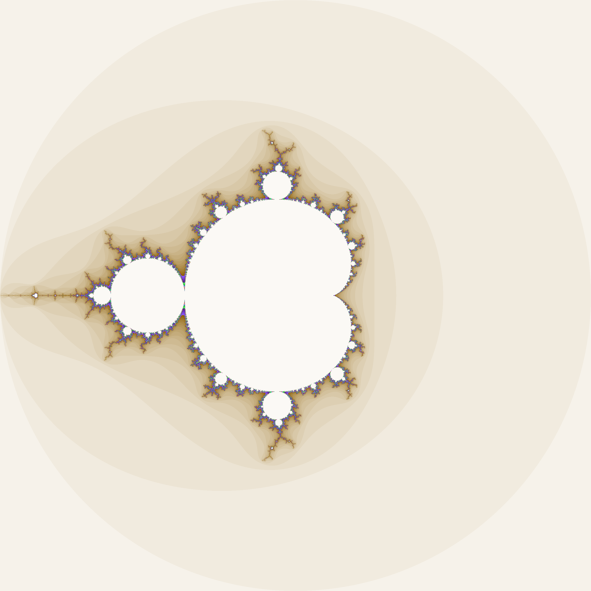
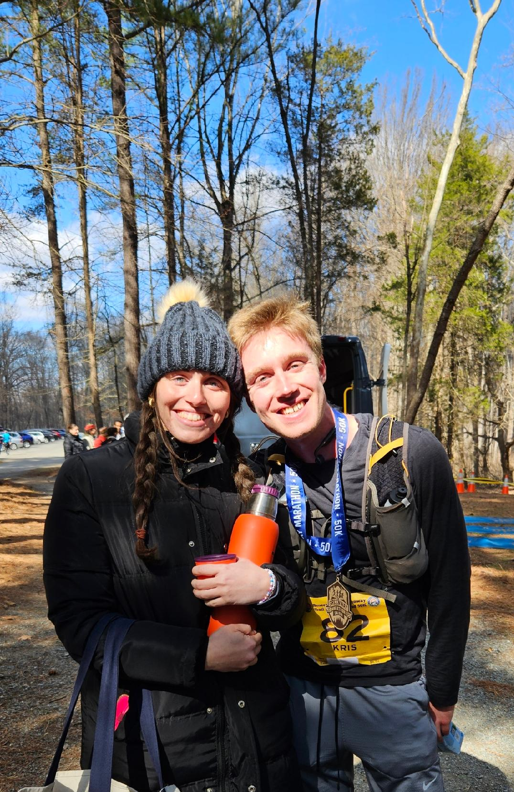
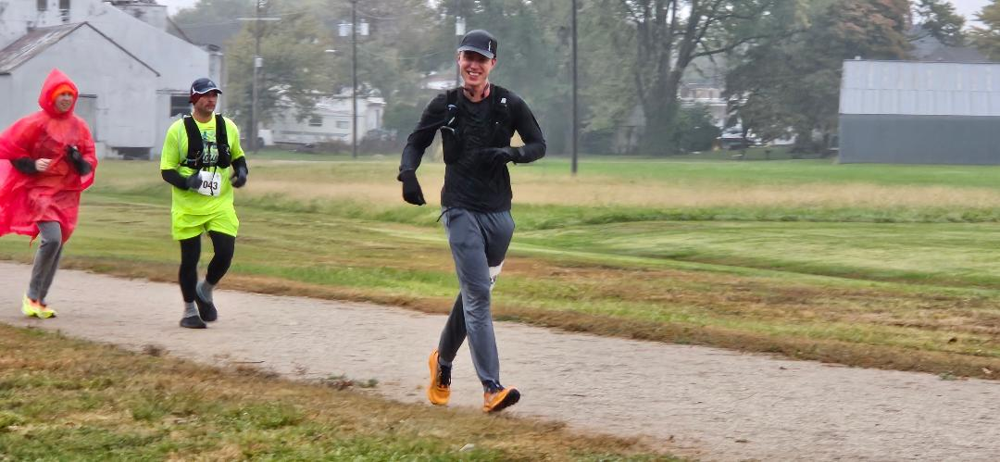
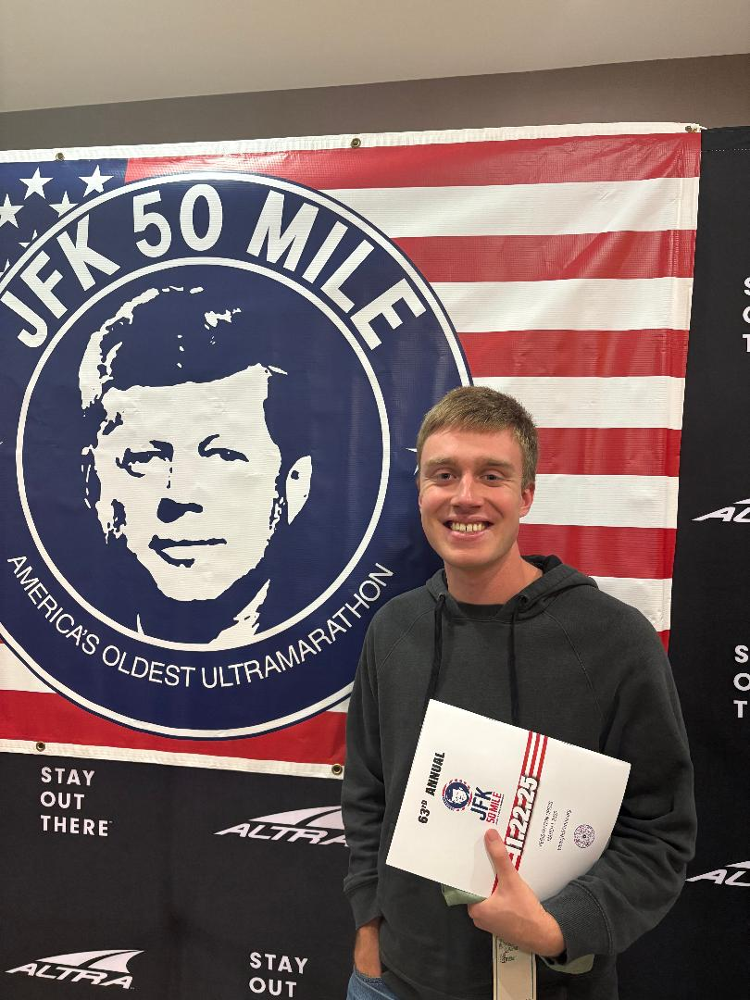

kris64aom@yahoo.com · Washington, DC
Kris Krueger.
Software engineer, team lead, and deputy product owner with 4+ years doing the full scope
of a technical role: Writing and shipping automation software, deploying it at scale,
standing up test assets end-to-end, and owning delivery for a team of engineers on flight
hardware programs.
Outside of work, I train for ultramarathons and build the software that runs my own
LEGO e-commerce business.
About
Software engineer
and team lead.
I'm a software engineer with 4+ years at Northrop Grumman writing automation platforms in Python, Tcl, and Bash, shipping GUI features, deploying software at scale with Ansible and Jenkins, and leading engineering teams through complex delivery cycles.
I write production Python and Tcl software, run sprint planning, mentor engineers, manage codebases, stand up networked test environments, and build software that engineering teams use daily to validate flight hardware.
Outside of work I run an e-commerce business with real Python software behind it, work on lower-level C programming, and train for ultramarathons.
Currently looking for a commercial software engineering role where reliability and technical depth are valued.
Resume
Background and experience.
4+ years in software engineering and team leadership. Condensed version below, full resume available to download.
Experience
Skills
Python, Bash, C, Tcl, JavaScript, HTML/CSS, MATLAB
Ansible, Jenkins, Git, BitBucket, CI/CD pipelines
Desktop GUI development, JavaScript/HTML/CSS, end-user application features
Test asset bring-up, network configuration, hardware-software integration
Education
Projects
Projects and side work.
Tools and programs I've written outside of my day job, plus the business behind most of them.
A Python program that cycles through my LEGO inventory listings on BrickLink and eBay, analyzes price history and sale velocity, and adjusts prices based on configurable rules. Supports item exclusions, cache management, and custom filters. Replaced a process that previously took hours of manual work.
A Python application that aggregates store metrics across my e-commerce operation, tracks sale history, and generates performance reports on demand. Shows what's selling, what's stagnant, and how the store is trending over time.

A C program that renders the Mandelbrot set as an image. Resolution, coordinate bounds, and iteration depth are all configurable via command-line inputs. Written with a mentor as an exercise in lower-level programming.

Started with my personal collection and grew into a reselling operation across BrickLink and eBay with thousands of active listings over four years. Most of my side project tooling is built to support this business.
A personal portfolio site built as a single static HTML file. Covers my professional background, side projects, and running. Designed to deploy on GitHub Pages with no dependencies or build steps required.
An automated eBay listing tool, a GUI front end for the price automation system, and potentially packaging the tooling for other resellers. These are on hold while my full-time role takes priority.
Running
Ultrarunning.
Started running in 2020 during the pandemic. Built up slowly from short runs, dealt with injuries along the way, and worked up to a half marathon, then a full marathon, then 50Ks, and then longer. In October 2025 I finished my first 100-miler.
Currently maintaining 50-mile weeks, staying active on the bike and on skis between running seasons.


